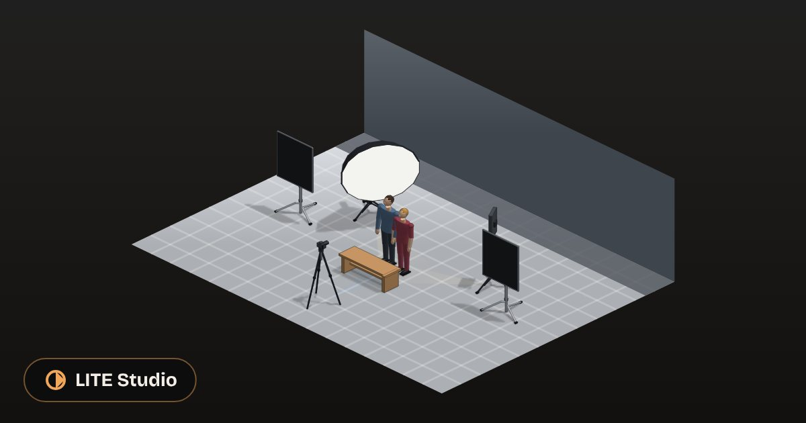
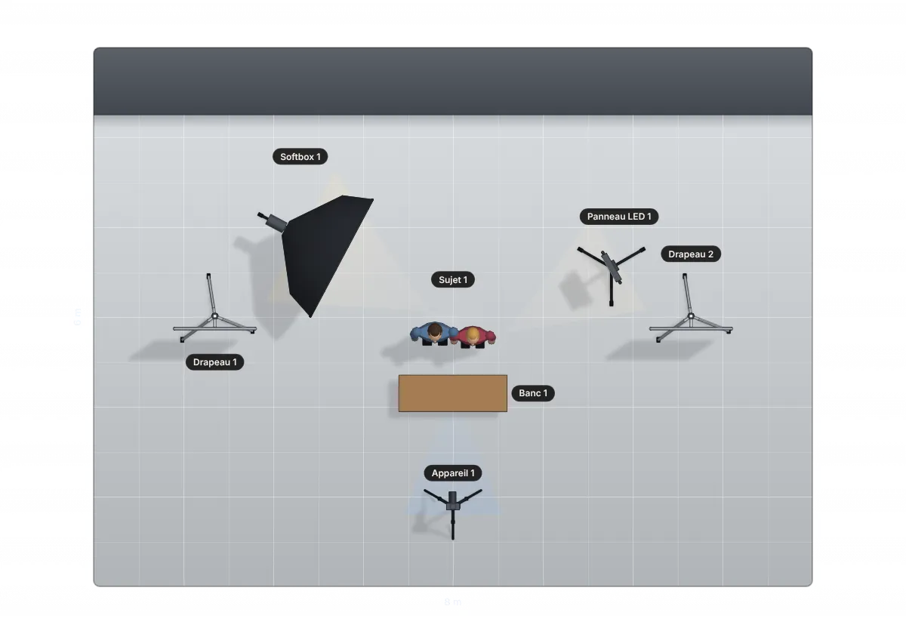
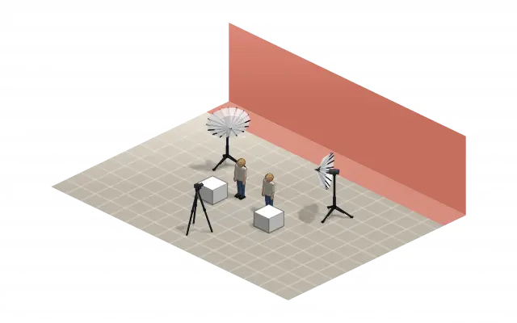

Duo Weich Weit
Kamera Stativ Standard, Softbox Parabolique 150, LED-Panel 1 x 2 und Flag 90 x 120 +1
- 7 Elemente
- Gruppe
- Studio 8 × 6 m


Ausrüstung 6
Aufnahme
- 1 ×Kamera Stativ Standard70 x 86 cm
Licht
- 1 ×Softbox Parabolique 150
- 1 ×LED-Panel 1 x 230 x 60 cm
Kontrolle
- 2 ×Flag 90 x 120
Mobiliar
- 1 ×Bank 120 cm120 x 40 cm
Öffnen Sie das Preset, um die Ausrüstung zu verschieben, Abstände zu messen und das Set-Blatt zu drucken.
In derselben Kategorie
 Familie Weich DaylightKamera Stativ Standard, Softbox Parabolique 150, Panel-Reflektor 120 x 180 und Bank 120 cm
Familie Weich DaylightKamera Stativ Standard, Softbox Parabolique 150, Panel-Reflektor 120 x 180 und Bank 120 cm Trio CorporateKamera Hohes Stativ, Softbox Recta 90 x 120, Panel-Reflektor 120 x 180 und Bank 120 cm
Trio CorporateKamera Hohes Stativ, Softbox Recta 90 x 120, Panel-Reflektor 120 x 180 und Bank 120 cm
Kids VerspieltPosing-Würfel 50 cm, Kamera Stativ Standard und Durchlichtschirm 105 cm